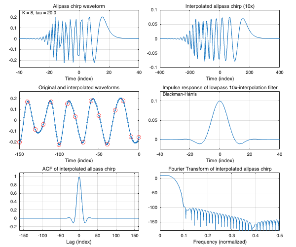

real_interpolated_example_01
Nyquist interpolation of an allpass chirp using an FIR lowpass interpolation filter
Supplement to the paper "Allpass-Based Chirp Design with Perfect Pulse Compression Property"
Ivan Selesnick Feb 17, 2025
Contents
clear
Allpass chirp
K = 8; tau = 20; tau_range = [3.3*K - 8.5, 3.3*K - 5.1]; % recommended range for tau Nf = 512; % FFT grid points [apc, target_funs] = real_allpass_chirp(K, tau, Nf);
Interpolated allpass chirp waveform
Interpolation factor M
M = 10; % interpolation factor [ic, lpf] = interpolated_allpass_chirp(apc, M); % create interpolated allpass chirp % lpf is the lowpass interpolation filter
Plots
figure(1) clf tiledlayout(3, 2 , 'Padding','compact', 'TileSpacing','compact') nexttile plot(apc.n, apc.h) xlim([-2 2]*apc.tau) title('Allpass chirp waveform') xlabel('Time (index)') ylim([-1 1] * 1.2 * 1/sqrt(apc.tau)) grid on plot_note(apc.Ktau_string); nexttile plot(ic.n , ic.h) xlim([-1 1] * 2 * apc.tau * lpf.M) title(sprintf('Interpolated allpass chirp (%dx)', lpf.M)) xlabel('Time (index)') grid on nexttile plot(ic.n, ic.h / ic.scale_factor , '.-', apc.n * lpf.M, apc.h, 'ro') xlim(([-15 0]) * lpf.M) title('Original and interpolated waveforms') xlabel('Time (index)') ylim([-1 1] * 1.2 * 1/sqrt(apc.tau)) nexttile plot(lpf.n , lpf.h ) title(sprintf('Impulse response of lowpass %dx-interpolation filter', lpf.M)) ylim([-0.25 1.25] / lpf.M) xlabel('Time (index)') grid on plot_note(lpf.window_name); nexttile plot(1-ic.N:ic.N-1, ic.xcorr) xlim([-1 1] * 2 * lpf.N) ylim([-0.3 1.1]) title('ACF of interpolated allpass chirp') grid on xlabel('Lag (index)') nexttile plot(ic.f, 20*log10(abs(ic.H)) ) xlim([0 0.5]) ylim([-180 20]) xlabel('Frequency (normalized)') title('Fourier Transform of interpolated allpass chirp') grid orient landscape print -dpdf -fillpage real_interpolated_example_01_fig.pdf
